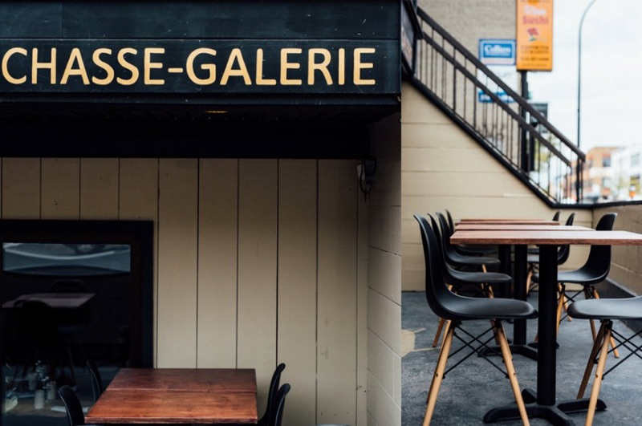
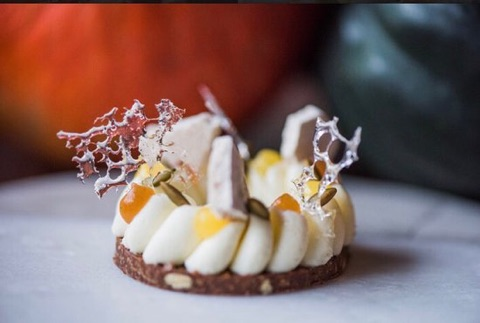
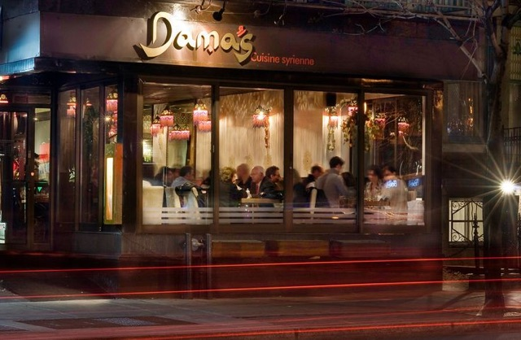
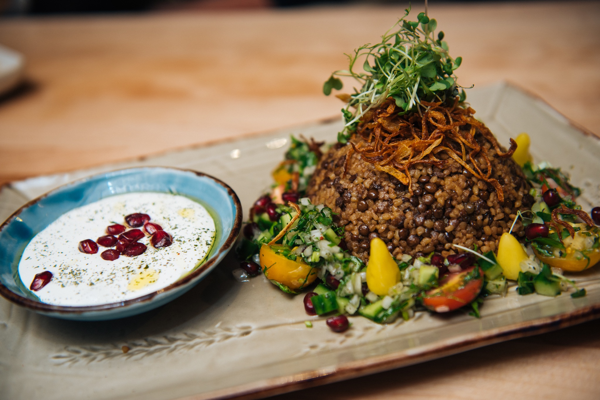

Restaurant Chasse Galerie |
|---|
|  |
|
A very high rated restaurant in Montréal. They offer delicates such as: Foie Gras, deer, and lobster. |
|  |
|
This is a beautiful Creme Bruleandeacute; with gold flakes. Almost to good to eat! |
Damas Restaurant |
|  |
|
Damas restaurant only takes reservations. It is rated with a near 5 stars. Offering fine dining French cuisine with bold tastes in each dish. |
|  |
|
An appetizer with lentils, lettuce, and a variety of organic vegetables, stacked high with a side of cool yogurt with dill and kidney beans. |